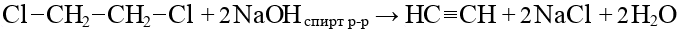

Определение
Алкины — ациклические углеводороды, содержащие в молекуле одну тройную связь между атомами углерода и соответствующие общей формуле:
CnH2n-2
Имеют sp гибридизацию.
Примеры
CH≡CH — этин или ацетилен
CH≡CH–CH3 — пропин
Номенклатура и изомерия
Нумерация от ближнего к тройной связи края.
- Изомерия положения тройной связи:
Пентин-1 Пентин-2 - Изомерия углеродного скелета:
Пентин-1 3-метилбутин - Межклассовая изомерия:
Пентин-1 Пентадиен-1,3
Физические свойства
- C2H2 - C4H6
- — газы
- C5H8 - C16H30
- — жидкости
- C17H32 - ...
- — твердые
Хорошо растворимы в воде, имеют запах
Получение
- Метановый способ (пиролиз метана):

- Гидролиз карбидов:
- Дегидрогалогенирование дигалогенпроизводных:

Химические свойства
- Галогенирование:
- Гидрогалогенирование (по правилу Марковникова):
- Гидратация (реакция Кучерова):

- Гидрирование:
- Димеризация:
- Тримеризация:

- Взаимодействие с амидами металлов:
- Алкины с тройной связью на конце молекулы реагируют с аммиачным раствором серебра (является качественной реакцией на положение тройной связи):
- Окисление в нейтральной среде:
- Этин:
- Пропин:
- Бутин-2:

- Бутин-1:
- Этин:
- Окисление в кислой среде:
- Этин:
- Пропин:
- Бутин-2:
- Бутин-1:
- Этин: